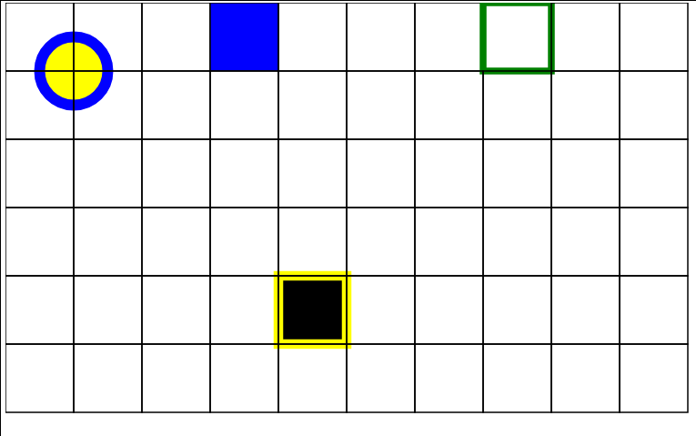

Nesta NAC você deverá criar uma API para construção de formas utilizando classes e métodos. Aqui você encontrará todas as especificações necessárias para elaboração dessa API. Essa página não deverá ser modificada. Você deverá modificar o arquivo desenho.js e implementar todos os objetos internamente.
O Resultado do SVG deverá ficar próximo ao exibido abaixo. Boa Sorte
